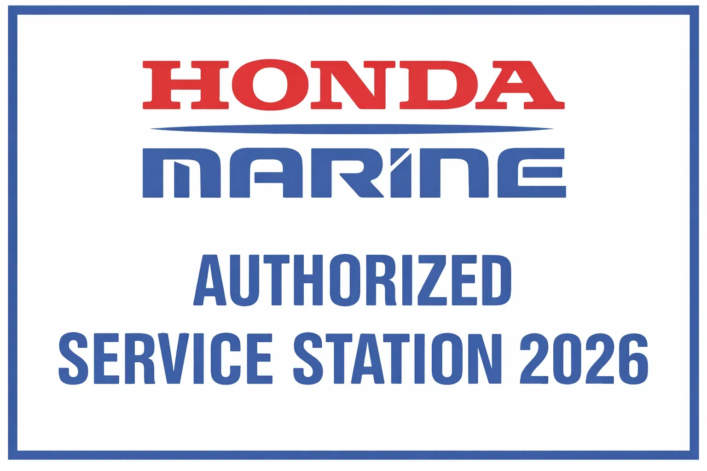
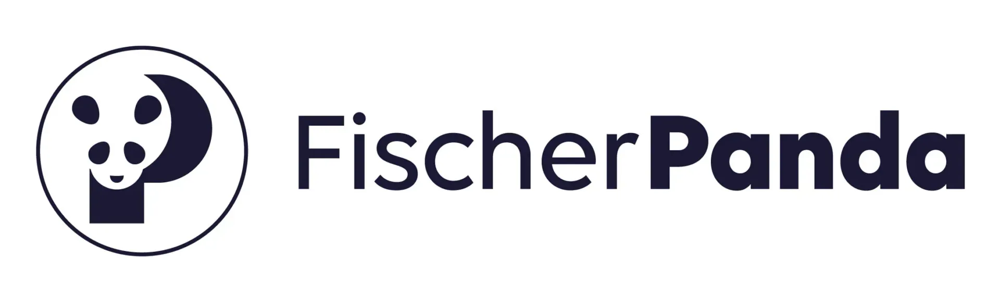

- Startseite
- Service & Winterlager
Ihr Boot in sicheren Händen.
Weltweit autorisierter Service für Honda Marine und Fischer Panda, dazu Landliegeplätze für einen Tag, einen Monat oder ein Jahr.
Autorisierter Honda Marine Service
Die BLUE VOYAGE YACHTING d.o.o. mit Sitz in Rijeka ist weltweit autorisierter Servicepartner des renommierten Herstellers HONDA MARINE, eines der führenden Namen der Bootswelt.
Wir sind in der ACI Marina Opatija und in der ACI Marina Rovinj tätig, einer der belebtesten Marinas der Adria.
Professionalität, Verantwortung, Qualität und schneller Service haben uns das Ansehen und Vertrauen von Stamm- und Neukunden in Kroatien und im Ausland eingebracht.
Um über die neuesten Entwicklungen in der Nautik informiert zu sein — Wissen, das wir an unsere Kunden weitergeben —, besuchen wir regelmäßig Serviceseminare und Bootsmessen in Kroatien und im Ausland.
Unser Service bietet umfassende technische Unterstützung mit allem nötigen Zubehör, Dokumentation und Diagnosewerkzeugen sowie Ersatzteile für alle Honda Motoren.
Honda Motoren — VerkaufServiceleistungen
Kranen und Zuwasserlassen
Boote bis 40 Tonnen.
Reparaturen
Elektrische und mechanische Arbeiten.
Schutz von Motor und Boot
Konservierung und Entkonservierung, Unterwasserschutzanstrich und Osmosebehandlung.
Motor- und Bootswartung
Winterinbetriebnahme, Laden der Batterien in der Werkstatt oder an Bord, Außen- und Innenreinigung mit Waschen und Polieren, Belüftung, Teakpflege und Holzarbeiten.
Rumpfreparatur
Holz und GFK.
Mobiler Service rund um die Uhr
Überführung und Transport von Booten zu Wasser und an Land.
Bei uns ist es sicher.
Bringen Sie Ihr Boot mit unserem fachkundigen Service im Winterlager wieder in Bestform.
Täglich, monatlich oder jährlich
Wir sind für Sie da — 365 Tage im Jahr.
Videoüberwachung
Ihr Boot ist bei uns sicher — die Videoüberwachung ist rund um die Uhr aktiv.
Halle oder Freigelände
Wählen Sie die Unterbringung, die am besten zu Ihrem Boot und der Saison passt.
Autorisiert, zertifiziert, verlässlich.

Zertifizierter Service für Honda Marine Motoren

Autorisierter Fischer Panda Servicepartner
So finden Sie uns
ACI Marina Opatija
Sitz, Service und Winterlager · Liburnijska ul. 7a, 51414 Ičići
ACI Marina Rovinj
Service — eine der belebtesten Marinas der Adria

Kontakt aufnehmen
Wir helfen Ihnen gern und finden die beste Lösung für Sie — ob Kauf, Charter, Service oder Ausbildung.
Anfrage senden